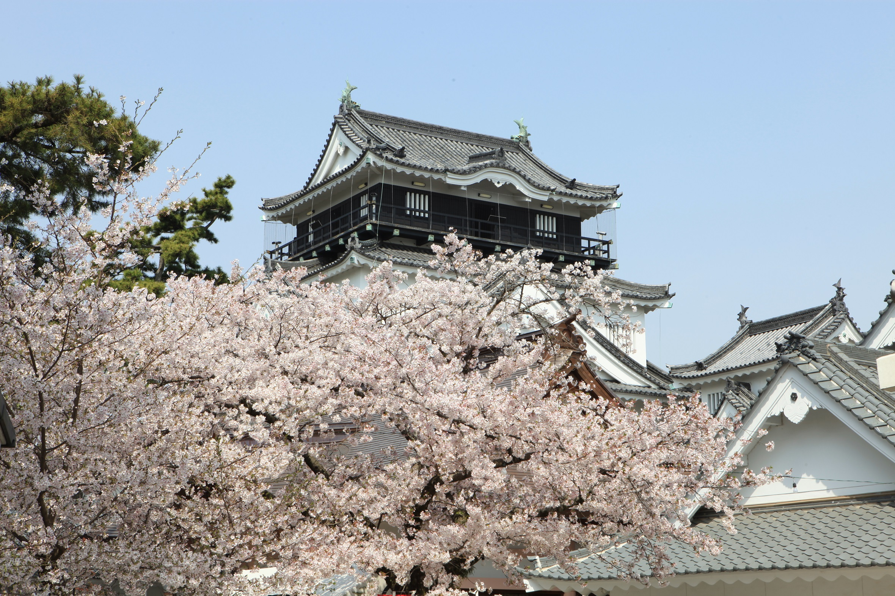
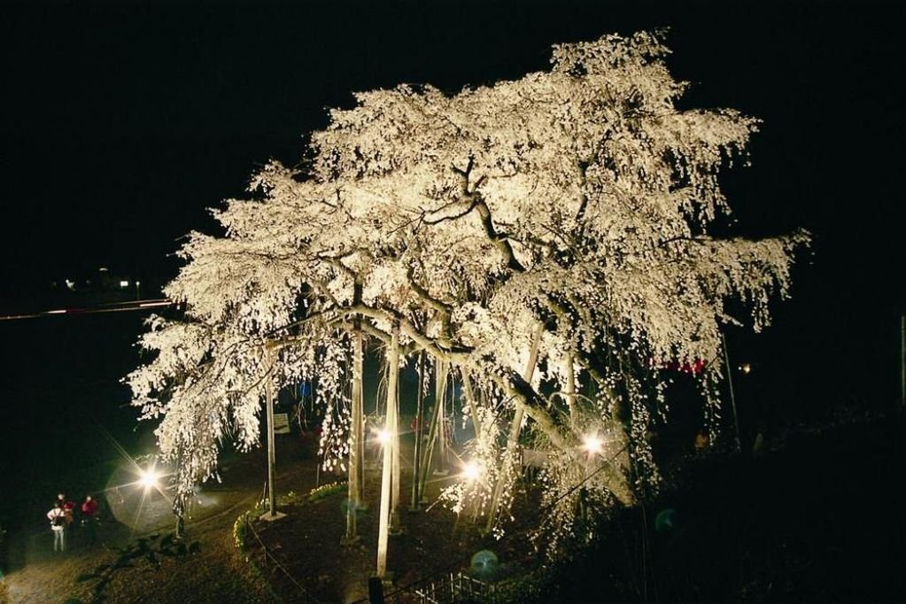
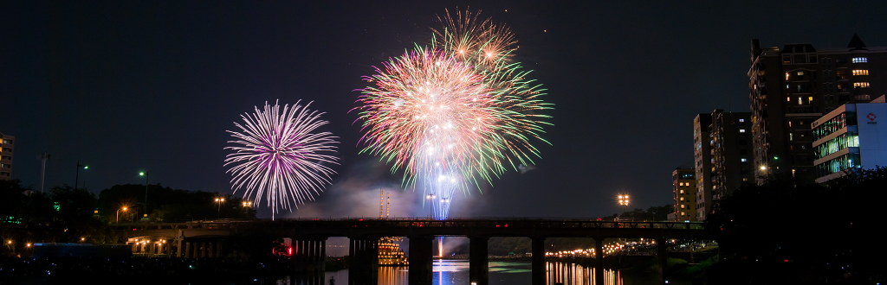

ここで紹介しているのは定番スポットです。ぜひ一度訪れてみてください！
岡崎城は、徳川家康公が生まれた地でもあります。
3層5階の天守は、岡崎市のシンボルです。
2006年に「日本100名城」に選定されました。

「日本さくら名所100選」に選ばれた岡崎公園をはじめ、桜の名所が市内各地に点在するさくらのまちとしても知られています。
シーズン中は夜にライトアップもされ、とてもきれいです。
定番はもちろん岡崎公園ですが、伊賀川沿いや乙川沿いの桜をはじめ、奥山田のしだれ桜もおすすめです。

岡崎の伝統産業である三河花火。
毎年8月に開催される花火大会は、仕掛花火、金魚花火、スターマインなどバラエティ豊富な花火が楽しめる、全国屈指の花火大会です。
